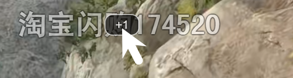

悬停即用
鼠标划过弹幕即出现 +1 按钮，点击一键发送同款弹幕。

鼠标划过弹幕即出现 +1 按钮，点击一键发送同款弹幕。
兼容文字 emoji、常规表情与特殊表情（resource_id 映射）。
正确处理「哈哈哈[大笑]笑死」等混合弹幕内容。
悬停时弹幕暂停，移开后从冻结位置继续滚动至自然消失。
播放器控制栏内置齿轮设置面板，无需再开 Tampermonkey 菜单。
普通直播间、活动页 iframe 与全屏模式下均正常使用。
前往 tampermonkey.net 安装浏览器扩展（Chrome / Edge / Firefox）。
点击上方「安装脚本」按钮，Tampermonkey 会自动弹出安装页面。
进入任意 B站直播间，悬停弹幕即可使用。
脚本会自动检查更新，新版发布后 Tampermonkey 会定期拉取最新版本。
点击直播间播放器控制栏中点赞按钮左侧的齿轮图标，可调整发送冷却开关、发送间隔、按钮透明度和调试面板。
不会。所有设置仅保存在浏览器本地，脚本不上传任何数据。
可以到 GitHub Issues 反馈，项目会更新表情映射表。
Chrome 90+ / Edge 90+ / Firefox 90+，配合 Tampermonkey ≥ 5.0。